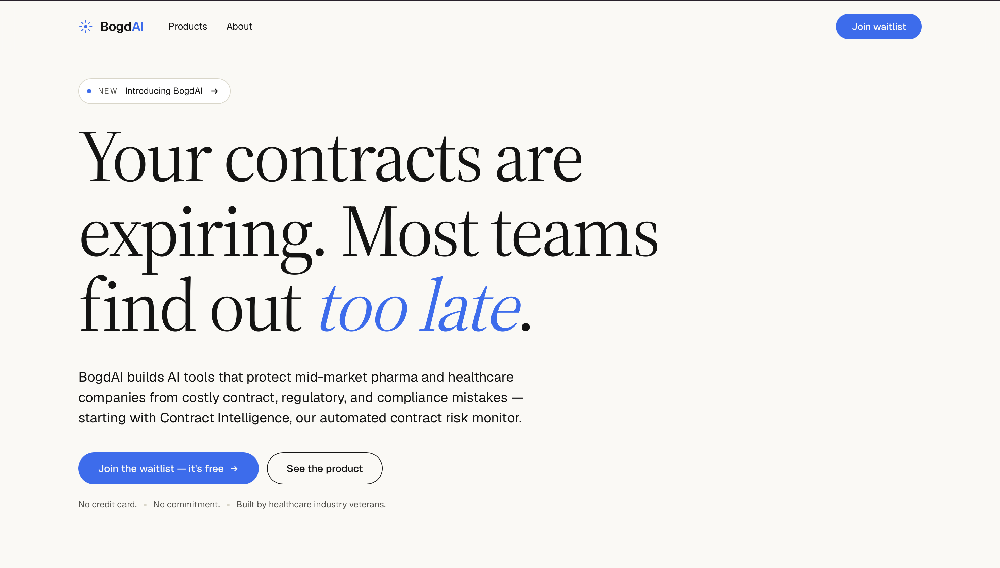

BogdAI
AI tools that protect mid-market pharma and healthcare teams from costly contract, regulatory, and compliance mistakes — starting with Contract Intelligence.
01 — Problem
Most teams find out too late
Contracts expire and auto-renew on dates nobody is watching. In pharma and healthcare, a missed clause or a lapsed obligation isn't an inconvenience — it's a regulatory, financial, and compliance risk that surfaces only after the damage is done.
Mid-market teams feel this hardest. They carry enterprise-grade obligations without an enterprise legal department, so the work of reading every contract, tracking every deadline, and catching every risk falls on people who already have full-time jobs. The status quo is a spreadsheet and a hope that someone remembers.
02 — What I built
Contract Intelligence
BogdAI's first product is Contract Intelligence — an automated contract risk monitor. It reads the contracts a team already has, surfaces the obligations and dates that matter, and raises a flag before a renewal or a compliance gap becomes a problem.
Under the hood it runs agentic workflows on Azure OpenAI and LangChain: retrieval, reasoning, and tool calls chained together, with a person reviewing every flag rather than transcribing it. The aim was infrastructure that runs quietly underneath the team — not another dashboard to check.
Ingest & structure
Contracts, obligations, and key dates are parsed into a structured, queryable representation the agents can reason over.
Monitor for risk
LangChain agents track renewal windows, flag risky clauses, and watch for regulatory and compliance gaps — continuously, not once a quarter.
Surface early
Every flag reaches a reviewer with its source clause attached and enough lead time to act. People make the call; the system makes sure they see it.
Ship & maintain
Exposed over REST APIs and shipped through CI/CD, so the monitor stays current as contracts and regulations change.

03 — Outcome
Built by people who know the stakes
BogdAI is the company I founded and am building now — with a team that has worked inside healthcare and knows what a missed obligation actually costs. Contract Intelligence is live in private beta with an open waitlist, and it's the first of a set of tools aimed at the same goal: catch the costly mistake before it happens.
No credit card, no commitment — a deliberate product for teams who treat compliance as serious work, not a formality.